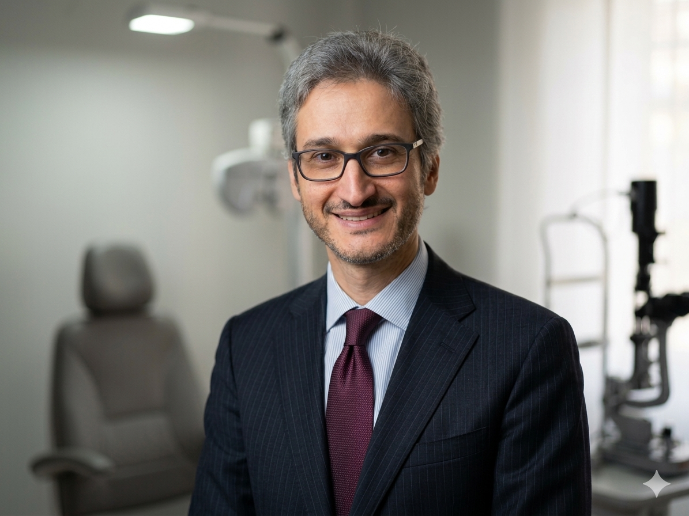

Medico Chirurgo · Specialista in Oftalmologia · Fellow in Glaucoma

Nato a Bologna nel 1981, mi sono laureato in Medicina e Chirurgia con 110/110 con lode presso l'Università di Bologna nel 2006, per poi specializzarmi in Oftalmologia con 70/70 con lode nel 2012.
Dopo un dottorato di ricerca e un periodo come assegnista all'Università di Bologna, nel 2015 ho iniziato la mia formazione al Moorfields Eye Hospital NHS Trust di Londra, dove ho dapprima operato come Honorary Registrar nel Servizio di Glaucoma, e successivamente — dal 2016 al 2019 — come Fellow in Glaucoma.
Al Moorfields ho eseguito come primo operatore oltre 500 interventi chirurgici di segmento anteriore, tra cui cataratta, trabeculectomia con tecnica "Moorfields Safer Surgery System", impianti drenanti di Baerveldt e ciclofotocoagulazione.
Dal 2019 sono rientrato in Italia, dove svolgo attività ospedaliera come Responsabile del Servizio di Glaucoma presso l'Ospedale degli Infermi di Faenza e l'Ospedale Morgagni-Pierantoni di Forlì, oltre all'attività libero-professionale a Bologna e Faenza.
Oltre 20 articoli pubblicati su riviste peer-reviewed internazionali nel campo dell'oftalmologia e del glaucoma.
Prenota online oppure contatta direttamente la segreteria dell'ambulatorio più vicino.
Prenota ora